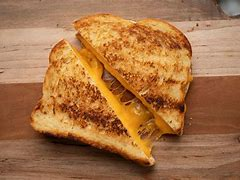

Delicious Grilled Cheese Sandwiches

Description
Golden-brown, crispy on the outside, and gooey on the inside—grilled cheese sandwiches are the epitome of comfort food.
Whether you’re making a quick lunch or a cozy dinner, this classic recipe never fails to hit the spot.
With just a few ingredients and a simple process, you can create a mouthwatering sandwich that’s perfect for any occasion.
Enjoy the melty cheese and perfectly toasted bread in every bite.
Ingredients (Serves 5)
- 10 slices of your favorite bread (sourdough, white, or whole wheat).
- 10 slices of cheddar cheese (or any melty cheese like American, Swiss, or mozzarella).
- Butter: 5 tablespoons of butter (softened for easy spreading).
Preparation
- Lay out the 10 slices of bread on a clean surface.
- Spread a thin layer of softened butter on one side of each slice of bread.
- Place a slice of cheese on the un-buttered side of one slice of bread.
- Top with another slice of bread, buttered side facing out.
- Repeat with the remaining bread and cheese to make 5 sandwiches.
- Heat a skillet or griddle over medium heat.
- Place the assembled sandwiches in the preheated skillet.
- Cook for about 3-4 minutes on each side, pressing down gently with a spatula,
- until the bread is golden-brown and the cheese is melted.
- Remove the sandwiches from the skillet and let them cool for a minute.
- Slice each sandwich in half if desired.
- Serve immediately and enjoy the gooey, cheesy goodness!
These grilled cheese sandwiches are perfect for a quick and satisfying meal. Happy cooking!